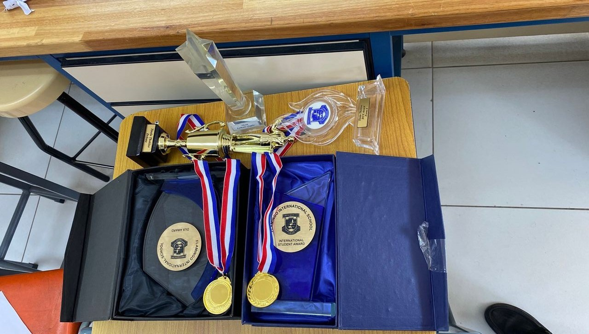
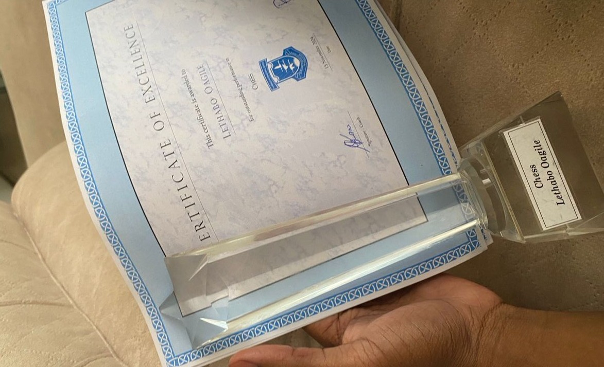
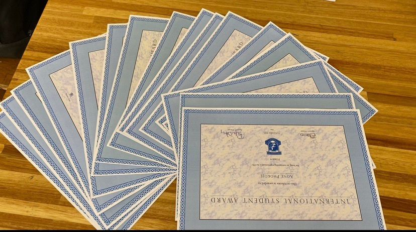

I pursued my studies at Flamingo International School, where my curiosity and commitment to learning played a significant role in shaping my academic journey. During this time, I developed a strong foundation in critical thinking, problem-solving, and discipline, which prepared me well for higher education. My experiences there not only strengthened my academic abilities but also nurtured my passion for technology and innovation. Currently, I am studying for a Bachelor of Science (Honours) in Applied Business Computing at the Botswana School of Business Sciences. This program is equipping me with a diverse and practical skill set that bridges both business and technology. I am actively developing competencies in mathematics, coding, and web development, while also gaining an understanding of how technology can be applied to solve real-world business challenges. Throughout my studies, I have cultivated analytical thinking, attention to detail, and a passion for continuous learning. I am particularly interested in leveraging my skills to create efficient digital solutions, improve business processes, and contribute to the evolving technological landscape. My academic journey reflects my dedication to personal growth and my ambition to make a meaningful impact in the field of applied business computing.

Beyond academics, I was recognized as one of the best chess players in high school. Chess taught me strategy, patience, and critical thinking — qualities that continue to guide me in computing and problem-solving.

I also excelled in volleyball, where teamwork and energy became my strengths. Sports gave me balance, resilience, and the ability to connect with others in a spirited, collaborative way.